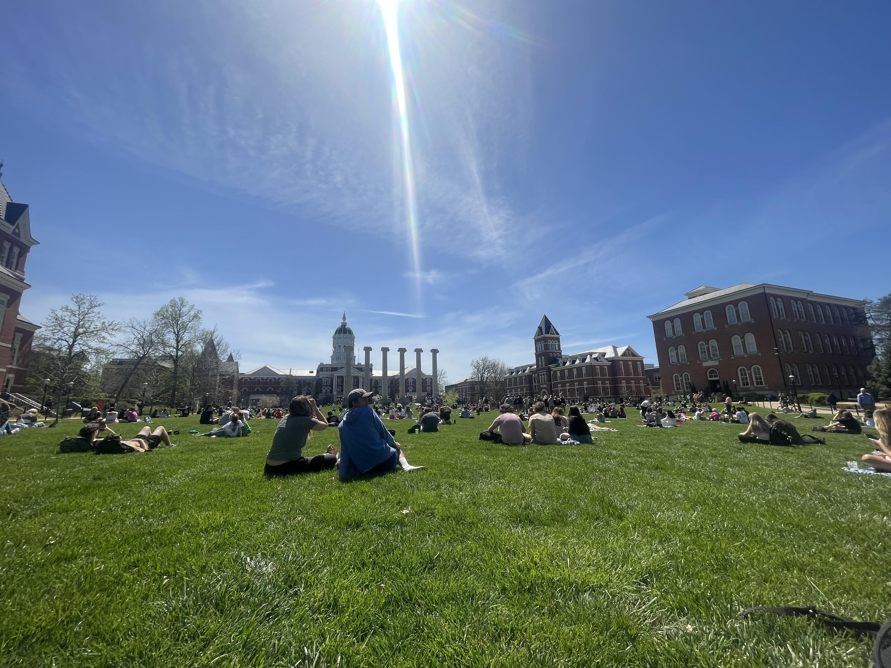
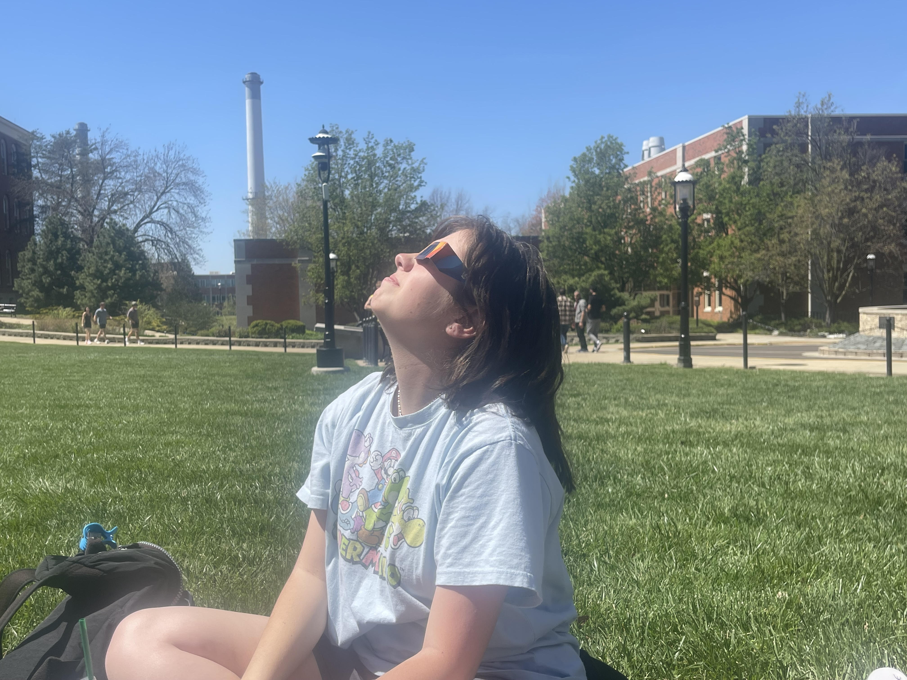
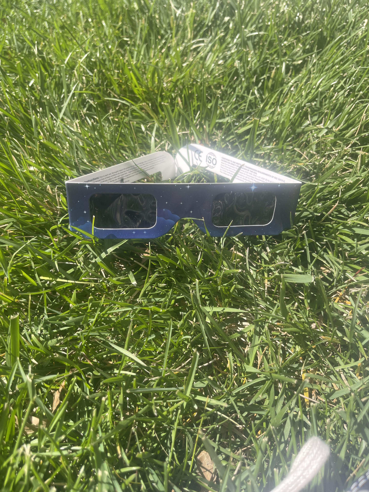
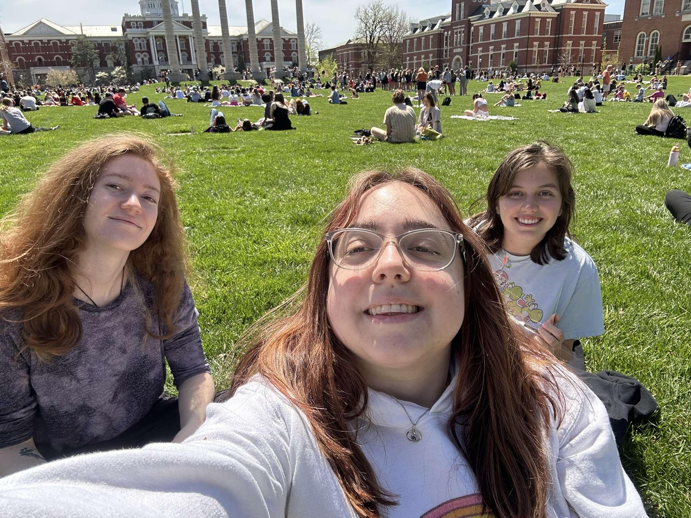
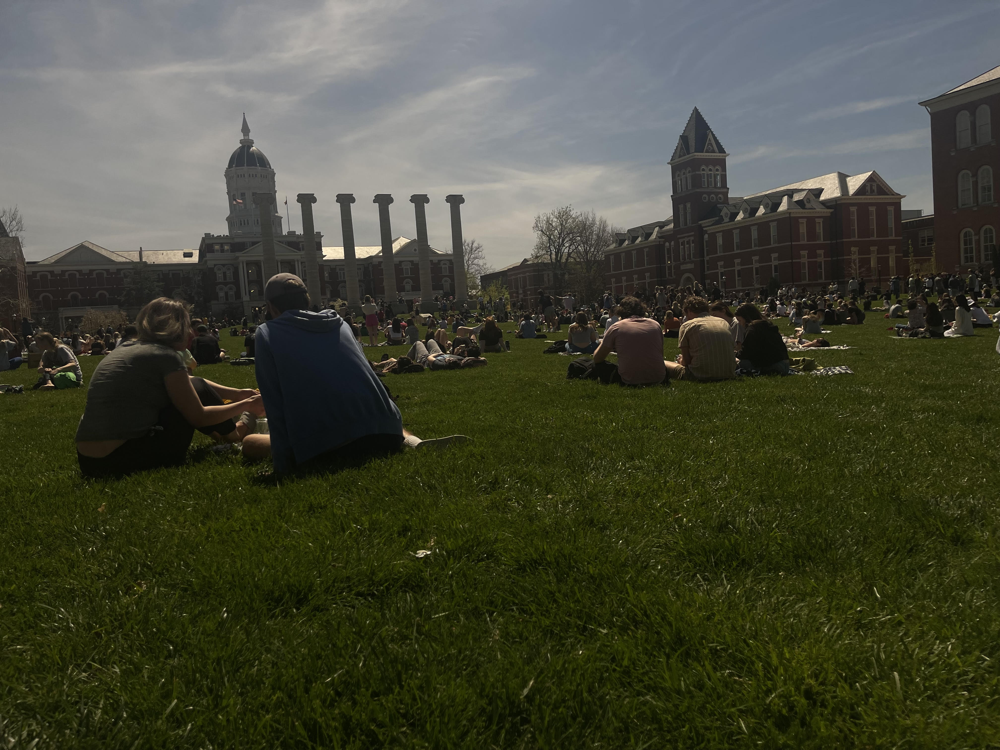

These photos are taken from the solar eclipse on May 8th. They are focused on the students that gathered in the Quad to watch the eclipse together. Students ran around downtown to find glasses and were all rushed to get to somewhere that they could watch the eclipse. All of the students on the Quad were silent in the moments leading up to the eclipse and started clapping and cheering when it was at the time of Columbia’s totality.

Students gather on the quad right before the eclipse starts. They lay down blankets to sit on and talk with friends as they anxiously await. By Gabby Nelson

Ashlee Klotzbuecher stares at the sun with her protective glasses on. The glasses help people see the eclipse without damaging their eyes. By Gabby Nelson

These glasses were given out for free around campus and by vendors around downtown Columbia for anyone to be able to see the eclipse as it happens. By Gabby Nelson

Gabby Nelson, Ashlee Klotzbuecher and Lydia Donaldson meet on the Quad to watch the eclipse together. Most groups of people went together to have fun and watch the eclipse. By Lydia Donaldson

Students watch in awe as the sky gets darker and the eclipse comes to totality at 1:56pm.